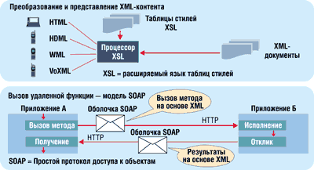

Андрей Колесов
Прошедшая в марте выставка CeBIT'2002 четко отразила одно из главных направлений современного этапа развития информационных и телекоммуникационных технологий - ориентацию на поддержку мобильных пользователей. При этом среди обилия предлагаемых устройств, программных продуктов и комплексных решений была хорошо заметна грань между средствами, ориентированными на индивидуальных лиц, и продукцией для корпоративных клиентов. Во второй категории особенно выделялась экспозиция группы компаний Information and Communication концерна Siemens, увенчанная лозунгом "Мобильные решения для мобильного бизнеса".
Siemens утверждает, что уже сегодня может предоставить полный ассортимент услуг по внедрению мобильного бизнеса на предприятиях. Этот ассортимент покрывается возможностями трех подразделений, входящих в состав Information and Communication.Так, подразделение Information and Communication Networks предоставляет широкий спектр IP-платформ - продукты, услуги и решения для Интернета; Information and Communication Mobile выпускает мобильные и стационарные устройства для передачи голоса, цифровых данных и видеоинформации, для работы с мобильными приложениями, а также оборудование мобильных сетей; а компания Siemens Business Services (SBS) поставляет решения в области электронного и мобильного бизнеса.
Ключевая роль в продвижении концепции мобильного бизнеса отводится SBS, которая предлагает полный спектр услуг по реализации ИТ-проектов (консалтинг, разработка и внедрение проектов, обучение, сопровождение и т. п.). В этой статье мы рассмотрим важнейшие составляющие модели мобильного бизнеса, предлагаемой SBS (они изложены достаточно обобщенно), а также некоторые конкретные решения этой компании (см. также http://www.mobilebusiness.ru).
От электронного бизнеса к мобильному
Мир электронного бизнеса возник благодаря возможности интегрировать различные источники данных и бизнес-процессы, делая их с помощью интегрированных Web-сайтов доступными потребителям, сотрудникам и партнерам. Если прежде фирмы могли обслуживать только тех клиентов, с которыми они контактировали непосредственно, то появление Интернета обеспечило массовый доступ к миллионам пользователей.
Беспроводные технологии будущего позволят людям заниматься бизнесом, где бы они ни находились, в любое время. Уменьшение стоимости и возрастающая скорость работы беспроводных устройств стимулируют переход к активному использованию радиосвязи. Начавшаяся конвергенция технологий позволит беспроводным устройствам выступать в качестве клиентов систем электронного бизнеса, которые таким образом превратятся в системы мобильного бизнеса.
Развитие мобильного бизнеса подразумевает реализацию следующих возможностей:
- обслуживание в любом месте (в офисе, дома, в дороге);
- использование любых сетей (проводных или беспроводных);
- использование любых устройств (телефоны, PDA, ПК и т. п.).
Указанные возможности становятся доступными в любой области (бизнес, досуг, образование). Вместе с тем следует иметь в виду, что мобильный бизнес подразумевает не просто предоставление традиционных услуг электронного бизнеса через различные переносные устройства, но и реализацию принципиально новых сервисов (например, всевозможные уведомления и предупреждения, выдаваемые в зависимости от местонахождения клиента). На рис. 1 приведены некоторые полезные мобильные приложения, которые могут появиться в ближайшее время.
 |
| Рис. 1. Примеры приложений мобильного бизнеса.
|
Мобильный бизнес - это логическое развитие электронного бизнеса. Соответственно, для успешного применения новых технологий нужно учитывать опыт (в том числе неудачный) реализации проектов электронной коммерции. Тут можно сформулировать несколько важных выводов:
- Интернет - это технология, помогающая эффективно организовывать имеющиеся на предприятии бизнес-процессы.
- Конкурентные преимущества обеспечивает не сам Интернет, а успешная бизнес-стратегия. В частности, это означает, что нужно фокусироваться не на отдельно взятом процессе, а на всей цепочке создания прибавочной стоимости.
- Решающее значение имеет предоставление именно тех Интернет-услуг, которые приносят реальную прибыль предприятию.
- Настоящая работа происходит за рамками видимой Web-страницы (электронная коммерция не работает без интегрированных и автоматизированных надлежащим образом бизнес-процессов).
- Интернет следует применять там, где это имеет смысл.
Стимулы перехода к мобильному бизнесу
Нужно иметь в виду несколько факторов, которые сегодня объективно сдерживают использование мобильных технологий для ведения бизнеса. В первую очередь это ограниченная скорость передачи данных, небольшой размер экранов мобильных устройств по сравнению с ПК, отсутствие специализированных приложений.
Вместе с тем Gartner Group выделяет и целый ряд благоприятных факторов (рис. 2).
| Рис. 2. Факторы, способствующие развитию мобильного бизнеса.
|
Коммерческие факторы. Бизнес нуждается в новых типах мобильных приложений, которые позволят уменьшить издержки в цепочке поставок и одновременно удовлетворят потребность клиентов в обслуживании "везде и всегда".
Технические факторы. Развитие технологий и падение цен на мобильные устройства делают новые типы приложений экономически осуществимыми. К примеру, технологии, обеспечивающие точное определение местоположения абонента, откроют путь к внедрению новых типов приложений, например, порталов поддержки торговли, находящих альтернативных поставщиков продуктов и услуг поблизости от покупателей.
Доступность. Сотовой связью будет охвачено практически все экономически активное население. В результате откроются возможности для выполнения онлайновых транзакций и электронной коммерции, в которой будет участвовать огромное число новых потребителей.
Главная мотивация компаний в области продвижения мобильных приложений - это стремление сохранять конкурентоспособность в течение длительного времени и создавать источники новых доходов. Вот два примера, демонстрирующих разные варианты эффекта от новой технологии. Первый - появление мобильных приложений само по себе вряд ли увеличит количество клиентов банка. Но банки, которые не будут иметь таких приложений, могут потерять своих клиентов завтра.
Второй пример - открывающиеся новые возможности в области бизнеса могут приносить дополнительные доходы (это легко показать на примере услуг для путешествующих). Туристы будут готовы платить за услуги, которые постоянно "сопровождают" их во время поездки и оказывают помощь в соответствии с текущим местонахождением.
Среди наиболее важных достоинств мобильного бизнеса можно отметить следующие его характеристики.
- Повсеместность. Это самое очевидное преимущество мобильного устройства, позволяющего в режиме реального времени получать информацию и оставаться на связи независимо от местонахождения.
- Достижимость. Она важна для многих людей, которые желают постоянно оставаться "на связи".
- Доступность. Доступ к личным и деловым ресурсам обеспечивается любым устройством через любую сеть - кабельную или беспроводную.
- Безопасность. Обеспечение безопасности мобильных транзакций еще находится на стадии становления. Но более полное использование возможностей SIM-карты в будущем повысит уровень безопасности по сравнению с тем, что имеется в сегодняшних Интернет-приложениях.
- Удобство. В мобильных устройствах хранятся личные данные, они всегда под рукой, а использовать их становится все легче.
- Локализация услуг и приложений. Этот фактор также существенно повышает ценность мобильных устройств.
- Мгновенное подключение к Интернету с мобильного телефона постепенно становится реальностью.
- Персонализация. Индивидуальные услуги доступны уже сегодня, хотя и в очень ограниченной степени.
Повышение скорости передачи данных
Одна из причин, сдерживающих переход к мобильному доступу, - недостаточная скорость передачи данных. В настоящее время для связи мобильных пользователей чаще всего используются сотовые сети стандарта GSM (9,6 или 14,4 Кбит/с), которые уже охватывают более 160 стран, предоставляя возможности международного роуминга. На GSM приходится свыше 60% мирового рынка сетей мобильной связи, их преобладание особенно заметно в Европе и Азиатско-Тихоокеанском регионе. Количество абонентов GSM в начале 2002 г. преодолело рубеж в 600 млн человек.
По оценкам экспертов, сети GSM будут использоваться в течение еще как минимум десяти лет. Но все же перспективы развития мобильного бизнеса сегодня связываются с переходом на использование технологий GPRS (General Packet Radio Service) и UMTS (Universal Mobile Telephony System), которые сулят более высокие скорости передачи данных, улучшение нынешних и появление принципиально новых услуг (рис. 3).
| Рис. 3. Беспроводные технологии.
|
GPRS - это протокол пакетной коммутации для сетей стандарта GSM, который в полнофункциональном варианте позволяет повысить скорость передачи до 115 Кбит/с. Реальное преимущество GPRS - поддержание постоянного IP-соединения между мобильным терминалом и сетью. Однако вся пропускная способность сети используется только тогда, когда данные действительно передаются.
В 2001 г. сервис GPRS был реализован в большинстве европейских сетей GSM. Первоначально фактическая скорость передачи данных оказалась значительно меньше приведенных выше цифр - 56 Кбит/с для нисходящего потока (к мобильному устройству) и 28 Кбит/с для восходящего (от мобильного устройства). Со временем максимальное значение скорости для двунаправленного потока будет доведено до 56 Кбит/с.
GPRS стала первой технологией передачи данных, которая обеспечивает мгновенный мобильный доступ в Интернет. Однако ее внедрение требует новых терминалов, поддерживающих более высокие скорости передачи данных, что негативным образом сказалось на развитии первых сетей GPRS. Кроме того, внедрение услуг GPRS заставило операторов радикально обновить биллинговые системы и тарифные планы, в частности, отказаться от поминутной тарификации.
Европейская технология мобильной связи третьего поколения известна под названием UMTS и стандартизована Европейским институтом телекоммуникационных стандартов (ETSI). UMTS предлагает режимы работы как в реальном времени (например, для обычного разговора), так и вне реального времени (например, для обмена электронной почтой). При этом используются общие механизмы, способные обеспечить надежную передачу голоса, текста и потокового видео. В рамках технологии UMTS связь может быть организована как с обязательным установлением соединения, так и без него (с коммутацией пакетов, как в сетях GPRS).
UMTS способна предоставить скорость передачи данных 2 Мбит/с, но это будет возможно только для неподвижного пользователя. Пешеходы смогут обмениваться данными со скоростью 384 Кбит/с, а пользователи, находящиеся в движущемся транспорте, - 144 Кбит/с. Ожидается, что операторы европейских стран начнут предлагать услуги UMTS уже осенью 2002 г., но первоначально сетями UMTS будут охвачены только крупные города.
Технология UMTS откроет новые возможности для развития мобильного бизнеса. Однако наиболее полезные современные мобильные приложения могут работать в сетях GSM или GPRS без каких-либо ограничений. Это означает, что мобильный бизнес начинается уже сейчас.
Архитектура мобильного бизнеса
Перспективы реализации мобильных решений сегодня связываются в первую очередь с использованием архитектурной модели WAP, которая, в свою очередь, является производной от модели WWW - с учетом текущих ограничений беспроводных сетей и мобильных терминалов.
Конечно, архитектурные решения для мобильного бизнеса будут иметь специфические особенности, однако их основой станут те же n-уровневые модели, которые используются в приложениях электронного бизнеса (рис. 4). Можно ожидать, что большинство реальных проектов будут сочетать возможности как мобильного, так и традиционного Интернет-доступа, т. е. строиться на базе единой платформы Web/WAP. Как показано на рис. 5, в этом случае общее ПО промежуточного слоя или клиентская платформа поддерживают как Интернет, состоящий из Web-страниц (посредством Web-сервера), так и мобильную сеть, состоящую из WAP-страниц (посредством WAP-сервера).
|  |
| Рис. 4. Архитектура приложений электронного и мобильного бизнеса.
|
| Рис. 5. Единая платформа Web/WAP.
|
Однако в обозримом будущем основные решения в области мобильного бизнеса будут создаваться путем интеграции мобильных технологий в существующие архитектурные решения электронного бизнеса. Одновременно сегодняшние решения в области электронного бизнеса будут эволюционировать в направлении интеграции архитектурных решений электронного и мобильного бизнеса путем поддержки абонентских устройств в традиционных кабельных и беспроводных сетях. Поэтому более реальным выглядит вариант, при котором модули бизнес-логики будут создаваться специально для поддержки мобильных клиентов.
В то же время нужно иметь в виду, что у мобильного бизнеса есть определенные отличия от традиционного электронного, что усложняет разработку новых и развитие существующих приложений. Создание мобильных решений - это вопрос не только интеграции, но и учета особенностей возникающей мобильной среды, наиболее важными из которых можно считать многообразие устройств, используемых для доступа к системе, неоднородность уровня пользовательского опыта, более широкое применение технологий Push & Pull, высокая степень персонализации интерфейса и предоставляемых функций.
Единая платформа XML
Полная интеграция Web- и WAP-клиентов, несомненно, является перспективным подходом, поскольку Web и WAP имеют схожие функции. Вот некоторые из преимуществ такого объединения:
- оптимизация конфигурирования и администрирования;
- выравнивание нагрузки и масштабируемость;
- перекодировка и презентация контента;
- интеграция на серверном уровне.
Наиболее перспективный вариант интеграции Web/WAP - применение языка XML, который создавался с целью структурировать и преобразовывать информацию для ее вывода на различные устройства, а также для повышения эффективности хранения, поиска и передачи данных в соответствии с реальными потребностями индивидуальных пользователей и организаций (рис. 7).
Рис. 7. Возможности платформы XML.
Технология XSL (eXtensible Stylesheet Language), разработанная в дополнение к XML, предназначена для форматирования или даже трансформации XML-информации в соответствии с шаблонами. Таблицы XML-стилей и процессор XSL используются для трансформации произвольного XML-документа в форму, подходящую для отображения на любом устройстве. Протокол доступа к объектам SOAP основан на XML и служит для активации вызовов удаленных функций через брандмауэр. Вызовы метода SOAP и возвращаемые значения выполняются как HTTP-запросы и отклики, что позволяет этому протоколу действовать, невзирая на установленные брандмауэры. Общая многоуровневая архитектура XML-платформы изображена на рис. 8.
Рис. 8. Единая платформа XML.
Разработчикам следует по возможности отделять бизнес-логику от специфики отдельных мобильных устройств, даже если пользовательский интерфейс и процедуры взаимодействия различны для моделей с разными форм-факторами. В какой степени удастся достичь этого разделения, зависит от инструментария, применяемого для разработки платформы, и от гибкости адаптеров устройств Web/WAP-платформы.
Легко заметить, что на рис. 8 фактически приведена архитектура мобильного корпоративного портала. Для его реализации нужно будет лишь добавить набор общих услуг, предоставляемых пользователям, - базовые функции (регистрация, безопасность, пользовательские профили, персонализация, поисковая машина), горизонтальные услуги (Push & Pull, предупреждения, поддержка групповой работы, услуги, основанные на местонахождении клиента, биллинг), а также управление контентом.
Решение Siemens - Mobile Enterprise Portal
Воплощая в жизнь приведенные выше архитектурные принципы, компания Siemens Business Services представила на CeBIT'2002 обобщенное решение Mobile Enterprise Portal (MEP), предназначенное для поддержки мобильной деятельности сотрудников предприятий. По мнению SBS, именно такие системы класса Business-to-Employee (B2E) будут востребованы на рынке в первую очередь и в будущем составят не менее трети всех мобильных приложений. В настоящее время MEP включает ряд приложений, сгруппированных в две категории - "Мобильный офис" (Mobile Office) и "Мобильный персонал" (Mobile Workforce).
С помощью средств "Мобильного офиса" и мобильных терминалов сотрудники фирм могут вне своего обычного рабочего места пользоваться всеми возможностями управления персональной информацией (электронная почта, календарь, контакты, задания, телефонные и адресные книги), обращаться к внутреннему справочнику телефонов и адресов предприятия. Интегрированные услуги с привязкой на местности (Location based Services) помогут, например, легко определить местонахождение нужного клиента или найти ближайшую бензоколонку, выбрать оптимальный маршрут при поездке на машине или пешей прогулке. Модуль поддержки путешественника предоставит информацию о расписании авиалайнеров, отелях, погоде...
Решение "Мобильный персонал" ориентировано на поддержку работы сотрудников, занятых в сфере сервиса. С его помощью обеспечивается централизованный подбор и вызов через мобильный терминал нужного технического специалиста. Еще на пути к клиенту (учитывая, что общий список заказов на день сотруднику передается еще утром, когда он находится дома) специалист получает от диспетчера подробную информацию о неполадках и "историю" конкретного клиента. После выполнения задания отчет о выполненных работах передается прямо в центральную диспетчерскую, где сразу же оформляются счета-фактуры для оплаты.
Зачем нужен мобильный бизнес
На одной из презентаций мне довелось увидеть видеоролик, который наглядно продемонстрировал преимущества мобильного бизнеса. Сюжет его таков. В некой солидной компании руководители подразделений собираются на срочную планерку в зале заседаний. Шеф из своего кабинета (он общается с подчиненными через видеосистему) дает им краткие, но весьма энергичные наставления. Озабоченные сотрудники покидают зал, но один из них задерживается в дверях и оборачивается на экран, который руководитель компании забыл отключить. Он видит, как шеф встает с кресла, снимает пиджак и манишку, надевает маску для подводного плавания, отодвигает бутафорскую ширму за собой и направляется в плавках и ластах по песчаному пляжу к морю. Мобильный бизнес, понимаешь...
Прогнозы развития мобильного бизнесаПо оценкам IDC, к 2003 г. в странах Западной Европы будет насчитываться 80 млн клиентов мобильной связи. Компания Durlacher Research прогнозирует, что объем продаж мобильных телефонов достигнет к этому времени 23 млрд евро (в 1999 году он составлял 1,5 млрд евро). В 2001 г. Институт по изучению европейского рынка провел исследование "Мобильный Интернет: в сети всегда и везде". Вот некоторые его результаты по Германии. На тот момент свыше 12 млн немцев уже имели мобильные устройства связи с доступом в Интернет, а еще 9 млн человек намеревались приобрести в течение ближайших двух лет такие мобильные терминалы, как ноутбук, мобильный WAP-телефон, смартфон, сетевая электронная записная книжка или персональный электронный помощник. Свыше 10 млн немцев с помощью своих мобильных Интернет-терминалов просматривали свою электронную почту, 9,6 млн пользовались услугами SMS. Телефонные разговоры занимали в списке популярности лишь третье место. Из тех, кто уже владел такими устройствами, 82% пользовались ими дома, 62% - на работе, 48% - в отпуске, 43% - в общественном транспорте, 35% - во время кратких прогулок, 38% - в автомобиле, 22% - в ресторанах и клубах. Для 88% привлекательна прежде всего возможность повсюду иметь доступ к необходимой информации в Интернете; 80% пользуются преимуществами мобильного доступа в Интернет для связи с друзьями и деловыми партнерами. Мобильные устройства помогают 60% потребителей эффективнее использовать время ожидания или нахождения в пути, а 32% ценят возможность онлайновых покупок. Вместе с тем 84% тех, кто пользуется мобильными терминалами либо планирует их приобрести, считают эти устройства все еще слишком дорогостоящими, 74% высказались за улучшение скоростных параметров связи, а 64% - за увеличение размеров дисплеев. Если же говорить именно о мобильном бизнесе, то следует иметь в виду, что, по данным ряда исследований, на долю электронной торговли в США приходится лишь 0,7% от общего товарооборота розничных продаж (в Европе - 0,2%). Соответственно, следует ожидать, что самыми быстрыми темпами будет развиваться мобильный бизнес между предприятиями (B2B) и для организации внутренних бизнес-процессов (B2E). |